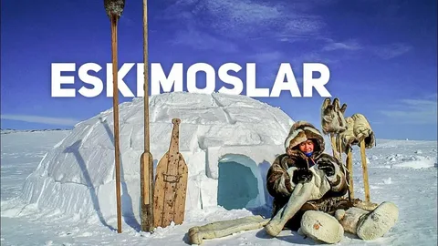

Eskimoslar tarixi va madaniyati
Eskimoslar (Inuitlar) - Shimoliy Amerika va Grenlandiyaning tub aholisi hisoblanadi. Ular asosan Arktika mintaqasida yashaganlar va bu hududning og'ir sharoitlariga moslashganlar. Eskimoslar ikki katta guruhga bo‘linadi:
Inuitlar – Asosan Kanada, Grenlandiya va Alyaskaning shimoliy hududlarida yashaydi.
Yupiklar – Alyaskaning janubi-g‘arbiy qismida va Rossiyaning Chukotka hududida yashaydi.
Turmush tarzi
Eskimoslar an'anaviy ravishda ovchilik va baliqchilik bilan shug'ullanganlar. Ular morj, tyulen va kit ovlash bo'yicha noyob ko'nikmalarga ega bo'lganlar. Qishda iglu (qordan yasalgan uy) va yozda teri chodirlardan foydalanganlar.
Madaniyat va san'at
Eskimoslar boy og'zaki an'analarga ega bo'lib, ularning afsonalari va rivoyatlari tabiat kuchlari bilan bog'liq bo'lgan. Ular suyak va yog'ochdan turli haykalchalar, niqoblar va amaliy san'at buyumlarini yasaganlar.
Hozirgi hayot
Bugungi kunda eskimoslar o'z an'analarini saqlab qolgan holda zamonaviy hayot tarziga moslashmoqdalar. Ko'pchilik eskimos jamoalari o'z tillarini va madaniy meroslarini saqlash uchun faol harakat qilmoqdalar.